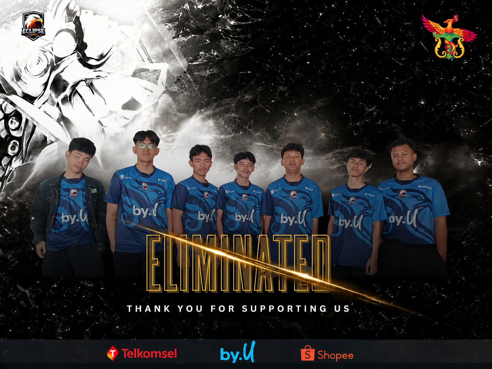

Jakarta — Tim Eclipse Force harus mengakhiri perjalanan mereka pada pertandingan
perdana di turnamen offline TOCUP ThirtyOneCup. Meski telah memberikan seluruh usaha
dan kemampuan terbaiknya, performa tim belum berjalan sesuai dengan yang diharapkan.
Hasil tersebut membuat Eclipse Force harus tereliminasi dan finis di peringkat 9–16 besar.
Kegagalan ini menjadi pengalaman berharga bagi seluruh pemain untuk mengevaluasi permainan dan
meningkatkan performa mereka di pertandingan-pertandingan berikutnya.
Meski harus tersingkir lebih awal, perjalanan Eclipse Force belum berakhir. Berbagai pelajaran dan
pengalaman yang didapatkan dari turnamen offline ini akan menjadi modal penting bagi tim untuk menghadapi
kompetisi selanjutnya.
Kini, Eclipse Force akan mengalihkan fokus menuju turnamen online tingkat DKI Jakarta.
Dengan adanya beberapa pergantian roster, tim diharapkan dapat tampil lebih solid, melakukan
evaluasi dari kesalahan sebelumnya, serta memberikan performa yang lebih baik pada kompetisi mendatang.
Roster Eclipse Force – TOCUP ThirtyOneCup:
Khairan Ananta — Ananta
M. Alvino — Carerra
Rasya Eka — Syakky
Rendy Khaizan — Kai
Dennis Al Buckhori — Dennis
Fahri A. Fauzi — Fahri
Zickho Fadhil — Ziccc
Turnamen ini menjadi langkah awal bagi Eclipse Force dalam perjalanan kompetitif mereka.
Dengan pengalaman yang telah diperoleh dan evaluasi yang dilakukan, tim kini bersiap untuk
kembali bertanding dan menunjukkan perkembangan mereka di panggung turnamen online DKI Jakarta.